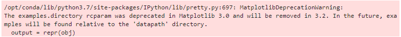
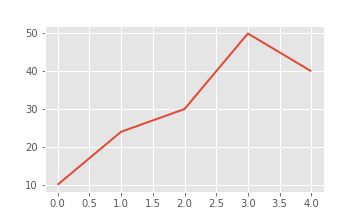
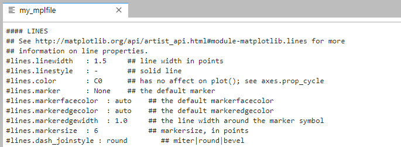
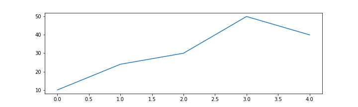
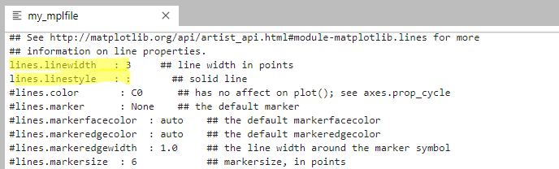
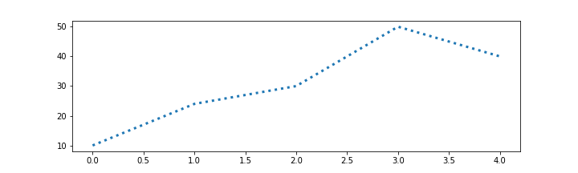
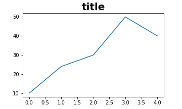
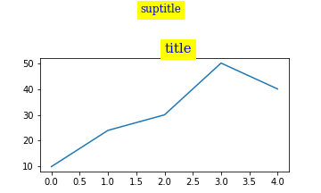
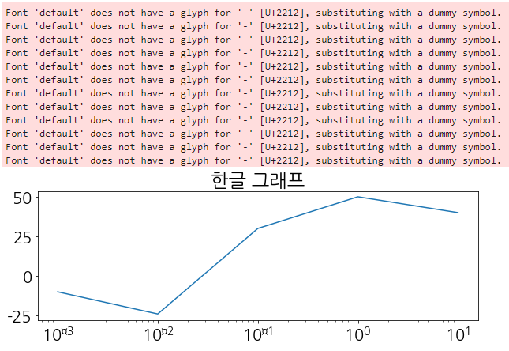
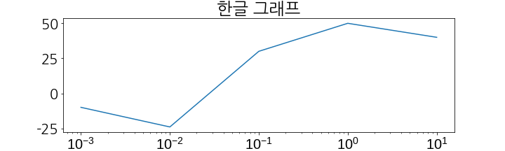

Matplotlib은 Python Visualization의 기둥이라고 해도 과언이 아닙니다.
자유도가 높아 원하는 그림을 자유롭게 그릴 수 있지만, 한편으로 명령어와 인자들이 자꾸 잊혀집니다.
약간의 짜증을 담아 Matplotlib의 기초 코드를 정리해둡니다.
혼동을 방지하기 위해
pyplot기반 명령어는 제외하고object oriented interface만을 남깁니다.옵션은 제가 활용하는 것 위주로 통일해서 정리하고, 옵션들을 조금은 자세하게 적습니다.
1
2
3
4import matplotlib.pyplot as plt
import matplotlib as mpl
%matplotlib inline
print(mpl.__version__)- 실행결과: 버전은 3.1.3. 기준입니다.
1
'3.1.3'
References
Matplotlib 3.1.3 (Usage Guide)
matplotlib.axes
Matplotlib: An Introduction To Its Object Oriented Interface
1. 기본값 설정
1.1. rcParams
Matplotlib API overview
Matplotlib User’s Guide: New in Matplotlib 2.0
- Matplotlib에서 그리는 그래프, 폰트 등의 기본값을 설정합니다.
plt.rcParams와mpl.rcParams모두 동일한 결과를 도출하므로 편한 것을 사용하면 됩니다.- 사용 가능한
rcParams항목:plt.rcParams - 초기값으로 되돌리기:
mpl.rcParams.update(mpl.rcParamsDefault)1
2
3
4
5
6
7
8
9
10
11
12plt.rcParams['figure.figsize'] = (5,5)
plt.rcParams['figure.dpi'] = 72
plt.rcParams['lines.linewidth'] = 4
plt.rcParams['axes.grid'] = True
plt.rcParams['savefig.dpi'] = 200
plt.rcParams['savefig.transparent'] = True
plt.rcParams['font.family'] = 'Dejavu Sans'
plt.rcParams['font.size'] = 14
plt.rcParams
1.2. rc
1.1에 설명한
plt.rcParams는 찝찝한 warning message를 보일 때가 있습니다.
matplotlib.rc()를 사용하면 warning message 없이 기본 설정을 변경할 수 있습니다.mpl.rc()와plt.rc()는 동일하게 작동하므로 편한 것을 사용하시면 됩니다.1.1의 예제 코드는 다음 코드와 정확히 일치합니다.
1
2
3
4
5
6
7
8
9
10
11from matplotlib import rc
rc('figure', figsize = (5,5))
rc('lines', linewidth = 4)
rc('axes', grid = True)
rc('lines', linewidth = 2, color = 'r')
rc('savefig', dpi = 200, transparent = True)
rc('font', family = 'Denaju Sans', size = 14)
plt.rcParams- 같은 항목(
lines등)은 한 줄로 여러 속성을 동시에 정의할 수 있습니다. - 이 특징을 확장하면 다음처럼 dictionary 형태로 깔끔한 관리가 가능합니다.
1
2
3
4
5
6font = {'family' : 'Denaju Sans',
'size' : 14,
'weight' : 'bold'
}
rc('font', **font)
- 같은 항목(
설정을 초기값으로 복원하려면
mpl.rcdefaults()를 실행하시면 됩니다.
1.3. style sheets
- 그래프 배경색, 색상 표, 폰트, 선 굵기 등이 일괄적으로 정해진 세트입니다.
- 본인 스타일에 맞는 것을 가져다 사용하시면 됩니다.
- 사용 가능한
style항목:plt.style.available - 기본 설정으로 되돌리기:
plt.style.use('default')1
2
3
4
5
6
7plt.style.use('ggplot')
fig, ax = plt.subplots(figsize=(5,3))
data = [10, 24, 30, 50, 40]
ax.plot(data)
plt.savefig('2_mpl_6.png', dpi=72)
plt.show()
1.4. rc_file : 기본값 custom 설정 파일
- 1.1 ~ 1.3은 필요할 때 기본값 설정을 변경하는 일입니다.
- 예를 들면 EDA(Exploratory Data Analysis) Jupyter Notebook을 하나 만들 때, 처음에 초기값들을 잡아놓고 실행할 수 있겠네요.
- 자주 사용하는 설정을 어딘가 저장해두고
ctrl + C/V로 불러올 수도 있겠지만 이것마저도 은근히 귀찮을 수 있고, 상황에 따라 다른 초기값을 불러오고 싶다면 여러 개의 다른 파일로 저장해놓고 불러오는 것이 가장 좋은 방법일 수 있습니다. - matplotlib은 파일 입력을 통한 기본값 일괄 설정을 지원합니다.
1.4.1. 먼저, matplotlib이 불러오는 기본값 설정 파일을 확인합시다.
mpl.matplotlib_fname()명령입니다.1
2mplfile = mpl.matplotlib_fname()
print(mplfile)- 실행결과: 저는 Docker에 설치된 Ubuntu 16.04 + Anaconda를 사용중이라 환경이 이렇습니다.
1
/opt/conda/lib/python3.7/site-packages/matplotlib/mpl-data/matplotlibrc
- 실행결과: 저는 Docker에 설치된 Ubuntu 16.04 + Anaconda를 사용중이라 환경이 이렇습니다.
1.4.2. 파일을 복사해서 열어봅니다.
- 파이썬 기본 명령어(
shutil등등)을 사용해서 가져옵니다.*파일을 열어보면, 이렇게 생겼습니다.1
2
3
4
5import shutil, os
currpath = os.getcwd() # 현재 작업 디렉토리
currmplfile = os.path.join(currpath, 'my_mplfile')
shutil.copy(mplfile, currfilename)

1.4.3. 부분적으로 수정합니다.
수정 전후의 차이를 알 수 있도록 수정하기 전에 먼저 그림을 그려보겠습니다.
1
2
3
4
5
6fig, ax = plt.subplots(figsize=(10,3))
data = [10, 24, 30, 50, 40]
ax.plot(data)
plt.show()
복사해 온
my_mplfile에서 원하는 부분을 수정합니다.간단하게 line.linewidth (1.5 → 3. 두껍게)와 line.linestyle(- → :. 실선에서 점선으로)을 수정해 줍니다.
수정한 항목은 맨 앞의
#를 지워서 활성화하는 것을 잊지 맙시다.
이제
mpl.rc_file()을 실행해서 수정한 설정파일을 불러옵니다.1
2mpl.rc_file('my_mplfile', use_default_template=False)
mpl.rcParams # 설정 변경을 확인합시다.
1.4.4. 똑같은 그림을 그려봅니다.
- 1.4.3의 코드를 다시 실행합니다.
- 선의 굵기와 모양이 변한 것을 확인할 수 있습니다.
 - matplotlib 본연의 기본값으로 되돌릴 때는
mpl.rc_file_defaults()를 실행하시면 됩니다.
2. Font
- 그래프에 들어가는 글자들의 폰트를 설정합니다.
plt.suptitle,ax.title,ax.xlabel,axes.xticklabels,ax.annotate,ax.text등으로 곳곳의 폰트를 설정할 수 있습니다.
2.1. mpl.font_manager.FontProperties
- 일반적으로
mpl.font_manager.FontProperties를 사용해서 설정할 수 있습니다. FontProperties를 이용해 폰트 종류, 크기, 스타일 등을 설정한 후 text 입력시fontproperties=로 입력합니다.1
2
3
4
5
6
7
8
9
10
11
12
13
14# font setting
font_setting0 = mpl.font_manager.FontProperties()
font_setting0.set_family('Dejavu Sans') # 'serif', 'sans-serif', 'cursive', 'fantasy', 'monospace'
font_setting0.set_size(20)
font_setting0.set_style('normal') # 'normal', 'oblique', 'italic'
font_setting0.set_weight('bold')
fig, ax = plt.subplots(figsize=(5,3))
data = [10, 24, 30, 50, 40]
ax.plot(data)
ax.set_title("title", fontproperties=font_setting0)
plt.show()
2.2. fontdict
matplotlib.axes.Axes.set_title
matplotlib User’s Guide #Text properties and layout
- 폰트 설정을 dictionary type 으로도 입력할 수 있습니다.
- dictionary 의 key와 value는 matplotlib User’s Guide에 정리되어 있습니다.
plt.suptitle공식문서에는fontdict항목이 없지만 실험결과 사용 가능합니다.1
2
3
4
5
6
7
8
9
10
11
12
13
14
15
16
17
18
19
20# font setting
fontdict = {
'family': 'serif',
'size': 15,
'backgroundcolor': 'yellow',
'color': 'blue',
'weight': 'normal',
'verticalalignment': 'baseline',
'horizontalalignment': 'left'
}
fig, ax = plt.subplots(figsize=(5,3))
data = [10, 24, 30, 50, 40]
ax.plot(data)
ax.set_title("title", fontdict=fontdict)
plt.suptitle("suptitle", fontdict=fontdict)
plt.subplots_adjust(top=0.7)
plt.show()
2.3. 글자가 깨질 때
matplotlib User’s Guide #Text properties and layout
Colaboratory Matplotlib에서 한글폰트 사용하기
파이썬 그래프 한글이 깨질 때 & 마이너스 부호 사용
matplotlib 3.2.0 #Unicode minus
matplotlib은 -(minus) 기호를 표시할 때 unicode minus(U+2212)를 ASCII hypen(U+002D) 보다 우선적으로 사용합니다.
plt.rcParams["axes.unicode_minus"] = False를 통해 ASCII hypen을 우선 사용하도록 변경할 수 있으나,때로는 그럼에도 불구하고 깨져서 출력되는 경우들이 있습니다. (ex. -가 지수에 표시되는 경우)
이 외에도 non-latin glyph가 제대로 표시되지 않는 경우에는
font.family앞에 새 폰트를 넣어주는 방식으로 해결할 수 있습니다.1
plt.rcParams['font.sans-serif'] = ['NanumGothic.ttf', 'sans-serif']
공식적으로 알려진 matplotlib 한글 사용 방법은 다음과 같습니다.
1
2
3
4
5
6
7
8
9
10
11
12import matplotlib.font_manager as fm # 폰트 관련 용도
font_list = fm.findSystemFonts(fontpaths=None, fontext='ttf')
# print(font_list)
# font_list에서 설치된 폰트를 확인 후에 사용하고자 하는 폰트를 적어줍니다.
fontpath = '/usr/share/fonts/truetype/nanum/NanumGothic.ttf'
font_name = fm.FontProperties(fname=fontpath, size=10).get_name()
plt.rc('font', family=font_name)
fm._rebuild()
mpl.rcParams['axes.unicode_minus'] = False간단하게는 이렇게만 넣어줘도 한글을 출력할 수 있습니다.
1
2plt.rcParams['font.family']='NanumGothic'
plt.rcParams['axes.unicode_minus'] = False운영체제에 관계없이 한 덩어리의 코드를 실행해서 한글을 구현하고자 한다면 다음 코드 뭉치를 복사하여 실행하면 편리합니다.
Windows와 Linux에 적용되며, Linux에서 처음 실행 시는
!apt-get앞에 있는#를 제거하고 실행하여 폰트를 설치해야 합니다.1
2
3
4
5
6
7
8
9
10
11
12
13
14
15
16
17
18
19
20
21
22
23
24
25
26
27
28
29
30
31
32
33
34
35
36
37
38
39
40
41
42
43import matplotlib.pyplot as plt
import matplotlib.font_manager as fm
import os, copy, sys, platform
system = platform.system()
if system == 'Windows':
datapath = os.getcwd() + '\\'
imagepath = datapath + 'images\\'
# ttf 폰트 전체개수
font_list[:10]
f = [f.name for f in fm.fontManager.ttflist]
f[:10]
[(f.name, f.fname) for f in fm.fontManager.ttflist if 'Nanum' in f.name]
path = 'C:\\Windows\\Fonts\\NanumBarunGothic.ttf'
font_name = fm.FontProperties(fname=path, size=50).get_name()
print(font_name)
plt.rc('font', family=font_name)
print("# matplotlib 한글 사용 가능")
elif system == 'Linux':
datapath = os.getcwd() + '//'
imagepath = datapath + 'images//'
# !apt-get update -qq
# !apt-get install fonts-nanum* -qq
path = '/usr/share/fonts/truetype/nanum/NanumGothic.ttf' # 설치된 나눔글꼴중 원하는 녀석의 전체 경로를 가져오자
font_name = fm.FontProperties(fname=path, size=10).get_name()
print(font_name)
plt.rc('font', family=font_name)
fm._rebuild()
mpl.rcParams['axes.unicode_minus'] = False
print("# matplotlib 한글 사용 가능")
else:
sys.exit('ERROR: Sorry, my code has compatibility with Windows and Linux only.')위 설정 후 한글이 들어간 그래프를 그려보겠습니다.
1
2
3
4
5
6
7
8
9
10
11
12# log의 지수가 깨지는 문제를 잘 보여주기 위해 폰트 크기를 키웁니다.
plt.rcParams['font.size'] = 20
fig, ax = plt.subplots(figsize=(10,3))
data_x = [0.001, 0.01, 0.1, 1, 10]
data_y = [10, 24, 30, 50, 40]
ax.plot(data_x, data_y)
ax.set_title('한글 그래프')
ax.set_xscale('log')
plt.show()
마이너스를 ASCII code에서 사용하게 했기 때문에 y축의 -25는 정상적으로 표시됩니다.
그럼에도 불구하고 unicode 문제가 발생하여 지수의 -가 벌레처럼(¤: U+00A5)표시됩니다.
superscript minus(⁻)는 U+207B이라는 독자 코드를 가지고 있지만, matplotlib에서는 U+2212를 올려서 사용하고 있습니다.가장 간편한 해결책은 U+2212를 가지고 있는 다른 폰트 중 하나를 불러오는 것입니다.
여러가지를 시험한 결과 나눔고딕과 가장 유사한 대체폰트는 Liberation Sans였습니다.
그 외에 ubuntu 16.04 기본 폰트 중에서는
Liberation Sans Narrow,Dejavu Sans,Ubuntu도 쓸만합니다.아래 한 줄을 위 코드에 추가해서 문제를 해결합니다.
1
plt.xticks(fontname="Liberation Sans")
